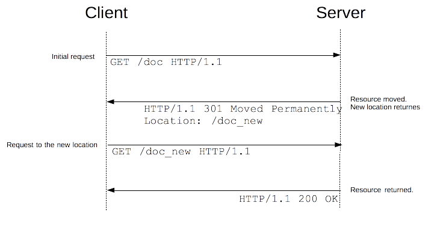

URL redirection, or URL forwarding, is a technique to keep links alive while the actual resource, being a page, a form or a whole Web application, is located at a different URL. HTTP provides a special kind of responses, HTTP redirects, to perform this operation used for numerous goals: temporary redirection while site maintenance is ongoing, permanent redirection to keep external links working after a change of the site's architecture, progress pages when uploading a file, and many more …
Principle
In HTTP, a redirection is triggered by the server by sending special responses to a request: redirects. HTTP redirects are responses with a status code of 3xx. A browser, when receiving a redirect response, uses the new URL provided and immediately loads it: most of the time, the redirection is transparent to the user, besides a small performance hit.

They are several types of redirects and they fall in three categories: permanent, temporary and special redirections.
Permanent redirections
These redirections are meant to last forever. They imply that the original URL should not be used anymore and that the new one is preferred. Search engine robots trigger an update of the associated URL for the resource in their indexes.
| Code | Text | Method handling | Typical use case |
|---|---|---|---|
301 |
Moved Permanently |
GET methods unchanged.Others may or may not be changed to GET.[1] |
Reorganization of a Web site. |
308 |
Permanent Redirect |
Method and body not changed. | Reorganization of a Web site, with non-GET links/operations. |
[1] The specification had no intent to allow method changes, but practically there are user agents out there doing this. 308 has been created to remove the ambiguity of the behavior when using non-GET methods.
Temporary redirections
Sometimes the requested resource cannot be accessed from its canonical location, but it can be accessed from another place. In this case a temporary redirect can be used. Search engine robots don't memorize the new, temporary link. Temporary redirections are also used when creating, updating and deleting resources to present temporary progress pages.
| Code | Text | Method handling | Typical use case |
|---|---|---|---|
302 |
Found |
GET methods unchanged.Others may or may not be changed to GET.[2] |
The Web page is temporary not available for reasons that have not been unforeseen. That way, search engines doesn't update their links. |
303 |
See Other |
GET methods unchanged.Others changed to GET (body lost). |
Used to redirect after a PUT or a POST to prevent a refresh of the page that would re-trigger the operation. |
307 |
Temporary Redirect |
Method and body not changed | The Web page is temporary not available for reasons that have not been unforeseen. That way, search engines doesn't update their links. Better than 302 when non-GET links/operations are on available on the site. |
[2] The specification had no intent to allow method changes, but practically there are user agents out there doing this. 307 has been created to remove the ambiguity of the behavior when using non-GET methods.
Special redirections
In addition to these usual redirections, there are two specific redirections. The 304 (Not Modified) redirects a page to the locally cached copy (that was stale), and 300 (Multiple Choice) is a manual redirection: the body, presented by the browser as a Web page, lists the possible redirections and the user clicks on one to select it.
| Code | Text | Typical use case |
|---|---|---|
300 |
Multiple Choice |
Not many: the choices are listed in an HTML page in the body. Could be served with a 200 OK status. |
304 |
Not Modified |
Cache refresh: this indicates that the cache value is still fresh an can be used. |
Alternative way of specifying redirections
HTTP redirects aren't the only way to defining redirections. There are two other methods: HTML redirections using the <meta> element, and JavaScript redirections using the DOM.
HTML redirections
HTTP redirects aren't the preferred way to create redirections, but sometimes the Web developer doesn't have the control over the server or cannot configure it. For these specific cases, the Web developers can craft an HTML page with a <meta> element and the http-equiv attribute set to refresh in the <head> of the page. When displaying the page, the browser will find this element and will go to the indicated page.
<head> <meta http-equiv="refresh" content="0;URL='http://www.example.com/'" /> </head>
The content attribute starts with a number indicating how many seconds the browser should wait before redirecting to the given URL. Always set it to 0, for better accessibility.
Obviously, this method only works with HTML pages (or similar) and cannot be used for images or any other type of content.
Note that these redirections break the back button in browser: you can go back to a page with this header but it instantaneously moves forward again.
JavaScript redirections
Redirections in JavaScript are created by setting a value to the window.location property and the new page is loaded.
window.location = "http://www.example.com/";
Like HTML redirections, this can't work on all resources, and obviously this will only work on clients that execute JavaScript. On the other side, there are more possibilities as you can trigger the redirection only if some conditions are met, for example.
Order of precedence
With three possibilities for URL redirections, several methods can be specified at the same time, but which one is applied first? The order of precedence is the following:
- HTTP redirects are always executed first when there is not even a page transmitted, and of course not even read.
- HTML redirects (
<meta>) are executed if there weren't any HTTP redirects. - JavaScript redirects are used as the last resort, and only if JavaScript is enabled on the client side.
When possible, always try to use HTTP redirects, and don't use a <meta> element. If a developer changes the HTTP redirects and forgets the HTML redirects, redirects are no more identical, or end up in an infinite loop, or other nightmares happen.
Use cases
There are numerous use cases for redirects, but as performance is impacted with every redirect, their use should be kept at a minimum.
Domain aliasing
Ideally, there is one location, and therefore one URL, for one resource. But there are reasons for wanting to have alternative names for a resource (several domains, like with and without the www prefix or shorter and easy to remember URLs, …). In these cases, rather than duplicating the resource, it is useful to use a redirect to the one true (canonical) URL.
Domain aliasing can be done for several reasons:
- Expanding the reach of your site. A common case is when your site resides under the
www.example.comdomain and accessing your pages fromexample.comshould be possible, too. Redirections forexample.compages towww.example.comare set up in this case. You might also provide commonly used synonym names, or frequent typos of your domain names. - Moving to a different domain. For example, your company has been renamed and you when searching for the old name, you want people used to the old company Web site still find you under the new name.
- Forcing HTTPS. Request to the HTTP version of your site will be redirected to the HTTPS version of your site.
Keeping links alive
When you restructure Web sites, URLs of resources change. Even if you can update the internal links of your Web site to match the new naming scheme, you have no control over the URLs used by external resources. You don't want to break this link as they bring you valuable users (and help your SEO), so you set up redirects from the old URLs to the new ones.
Even if this technique also works for internal links, you should try to avoid having internal redirects. A redirect has a significant performance cost (as an extra HTTP request is done) and if you can avoid it by correcting internal links, you should fix these links.
Temporary responses to unsafe requests
Unsafe requests modify the state of the server and the user shouldn't to replay them inadvertently. Typically, you don't want your users to resent PUT, POST or DELETE requests. If you just serve the response as the result of this request, a simple press of the reload button will (possibly after a confirmation message), resend the request.
In this case, the server can send back a 303 (See Other) request that will contain the right information, but if the reload button is pressed, only this page is redisplayed, without replaying the unsafe requests.
Temporary responses for long requests
Some requests may need more time on the server, like sometimes DELETE requests that are scheduled for later processing. In this of case, the response is a 303 (See Other) redirect that links to a page indicating that the action has been scheduled, and eventually informs about the progress, or allows to cancel it.
Configuring redirects in common servers
Apache
Redirects can be set either in the server config file, either in the .htaccess of each directory.
The mod_alias module has Redirect and Redirect_Match directives that set up a 302 response (by default):
<VirtualHost *:80> ServerName example.com Redirect / http://www.example.com </VirtualHost>
The URL http://example.com/ will be redirected to http://www.example.com/ (but not http://example.com/other.html )
Redirect_Match does the same but takes a regular expression to define a collection of URLs that are affected:
RedirectMatch ^/images/(.*)$ http://images.example.com/$1
All documents in the images/ folder will be redirected to a different domain.
If you don't want to set up a temporary redirect, an extra parameter (either the HTTP status code to use or the permanent keyword can be used to set up a different redirect:
Redirect permanent / http://www.example.com Redirect 301 / http://www.example.com
The mod_rewrite module can also be used to create redirects. It is more flexible, but a bit more complex to use.
Nginx
In Nginx, you create a specific server block for the content you want to redirect:
server {
listen 80;
server_name example.com;
return 301 $scheme://www.example.com$request_uri;
}
For having a redirect applying to a folder or a subset of the pages only, use the rewrite directive:
rewrite ^/images/(.*)$ http://images.example.com/$1 redirect; rewrite ^/images/(.*)$ http://images.example.com/$1 permanent;
IIS
In IIS, you use the <httpRedirect> element to configure redirections.
Redirection loops
Redirection loops happen when successive redirections follow the one that has already been followed. In other words, there is a loop that will never be finished and no page will be found ultimately.
Most of the time this is a server problem and if the server cannot detect it, it will send back a 500 Internal Server Error. If you encounter such an error soon after modifying a server configuration, this is likely a redirection loop.
Sometimes, the server won't detect it: a redirection loop can spread over several servers which each don't have the full picture. In this case, browsers will detect it and post an error message. Firefox will display:
Firefox has detected that the server is redirecting the request for this address in a way that will never complete.
while Chrome will display:
This Webpage has a redirect loop
In both cases, the user can't do much (unless a corruption is happening on their side, like a mismatch of cache or cookies).
It is important to avoid redirection loops as they completely break the user experience.